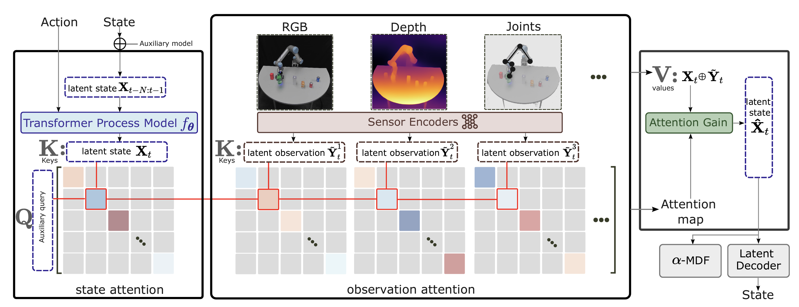
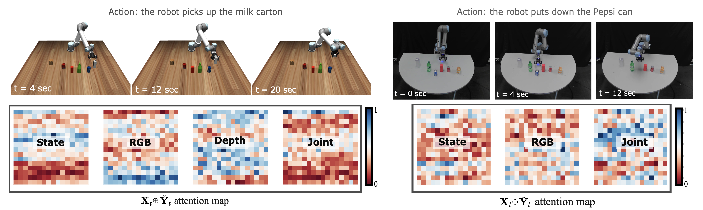
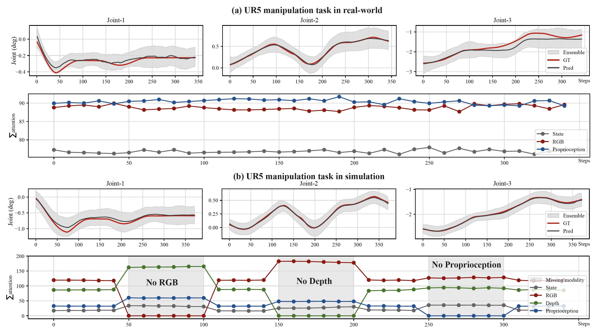

Rigid Body Motion
We use α-MDF for monitoring the state of a UR5 robot during tabletop arrangement tasks.
Differentiable Filters are recursive Bayesian estimators that derive the state transition and measurement models from data alone. Their data-driven nature eschews the need for explicit analytical models, while remaining algorithmic components of the filtering process intact. As a result, the gain mechanism -- a critical component of the filtering process -- remains non-differentiable and cannot be adjusted to the specific nature of the task or context. In this paper, we propose an attention-based Multimodal Differentiable Filter (α-MDF) which utilizes modern attention mechanisms to learn multimodal latent representations. Unlike previous differentiable filter frameworks, α-MDF substitutes the traditional gain, e.g., the Kalman gain, with a neural attention mechanism. The approach generates specialized, context-dependent gains that can effectively combine multiple input modalities and observed variables. We validate α-MDF on a diverse set of robot state estimation tasks in real world and simulation. Our results show α-MDF achieves significant reductions in state estimation errors, demonstrating nearly 4-fold improvements compared to state-of-the-art sensor fusion strategies for rigid body robots. Additionally, the α-MDF consistently outperforms differentiable filter baselines by up to 45% in soft robotics tasks.
We utilize an ensemble method for Bayesian filtering wherein each ensemble member represents a compact robot state. Figure below shows the procedural steps of how this compact representation, known as the latent state, is obtained and get updated. The filtering process includes two essential steps, namely prediction and update, both of which are also implemented through neural networks. Most importantly, we replace the Kalman gain step with an attention mechanism, which is trained to weigh observations against predictions based on the current context. Additionally, we demonstrate that attention can be used to balance and weigh different modalities, e.g., video, depth, inertial measurements, against each other. We will see that both steps can be naturally integrated into a single attention gain (AG) module.
The proposed attention gain (AG) module eliminates the need for an explicit observation model and can directly utilize high-dimensional features. By leveraging this approach, our framework enables a more flexible and efficient integration of measurements without the explicit requirement of a mapping function from the state to the measurement domain. Instead of using one sensor encoder, we use multiple sensor encoders to learn latent observations from each modality.
Left: manipulation in a simulated environment with modalities [RGB, Depth, Joint], and right: real robot manipulation with modalities [RGB, Joint]. The attention maps indicate the attention weights assigned to each modality during model inference. In the visualization, regions in red correspond to low attention values, while those in blue indicate high attention values.
Predicted joint angle trajectories and the corresponding accumulated attention values for each modality. (a) represents the results attained from the actual robot, whereas (b) illustrates attention values for all modalities both with and without masking certain modalities.
We use α-MDF for monitoring the state of a UR5 robot during tabletop arrangement tasks.
This experiment involves implementing the α-MDF to model the dynamics of a soft robot system.
To assess the performance and effectiveness of our approach, we conducted comparative evaluations against differentiable filter baselines and sensor fusion baselines.
How to Train Your Differentiable Filter introduces general approcahes for building differentiable filter frameworks.
Differentiable Particle Filters introduces end-to-end learning with sampling method intact for filtering.
Various sensor fusion strategies, including unimodal fusion and crossmodal fusion, are thoroughly discussed in Multimodal Sensor Fusion with Differentiable Filters.
@inproceedings{liu2023alphamdf,
title = {\alpha-MDF: An Attention-based Multimodal Differentiable Filter for Robot State Estimation},
author = {Liu, Xiao and Zhou, Yifan and Ikemoto, Shuhei and Amor, Heni Ben},
booktitle = {7th Annual Conference on Robot Learning},
year = {2023},
url = {https://openreview.net/forum?id=0hQMcWfjG9},
}